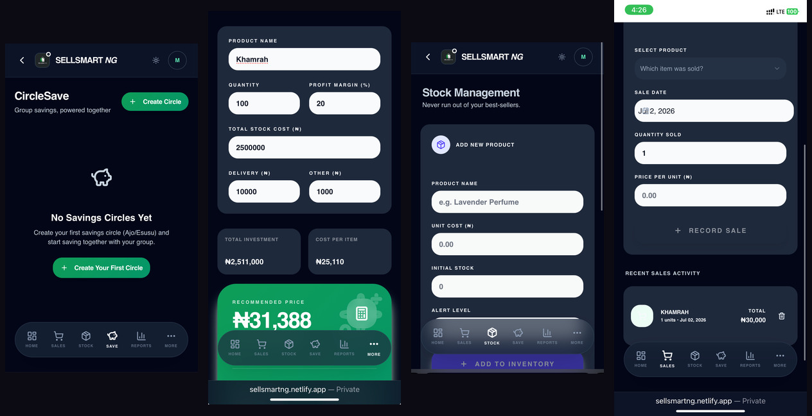
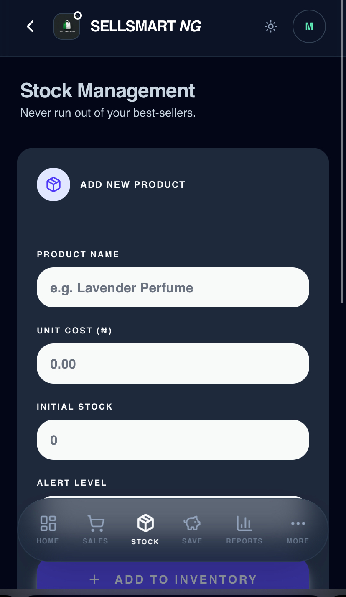
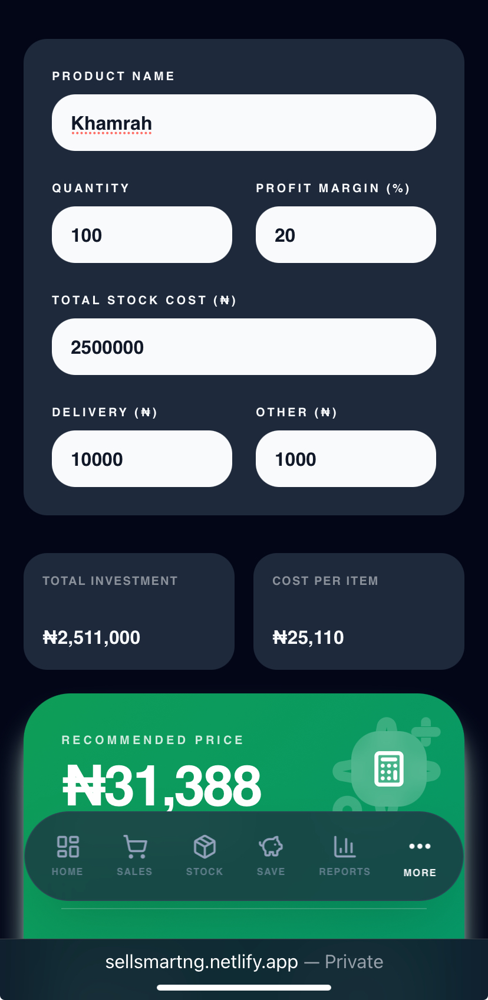
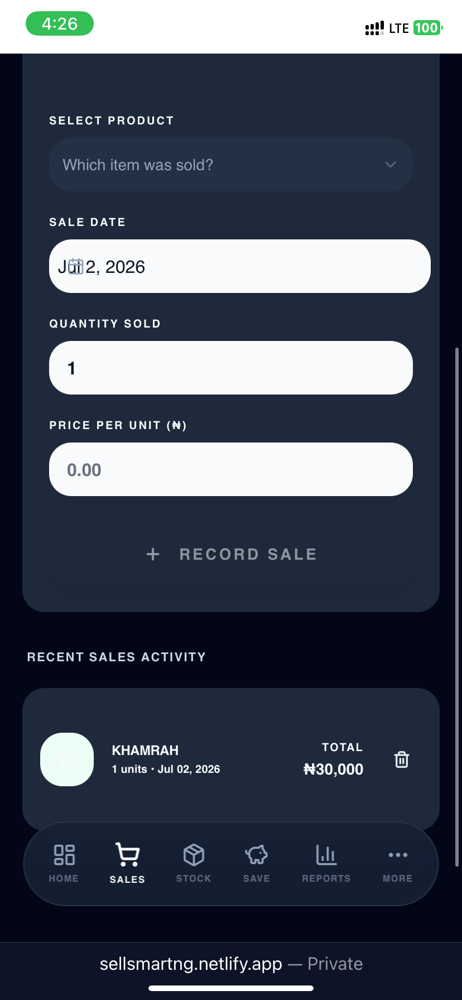
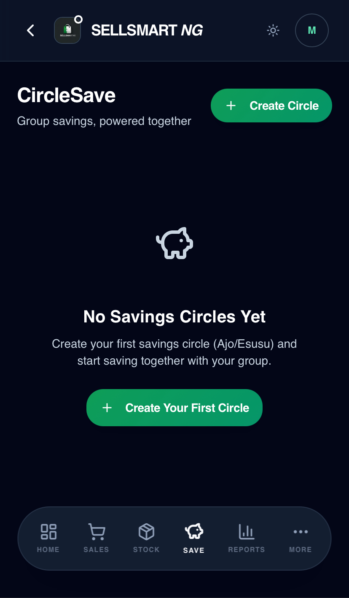

SellSmart NG
Smart business management for the Nigerian entrepreneur running their books from a phone, not a spreadsheet.

Running a business from memory
Most small Nigerian entrepreneurs — the wig sellers, the phone-accessory hawkers, the perfume rebranders — run their entire business from memory, a notebook, or scattered WhatsApp chats. There's no single place to know, at a glance, what's selling, what's left in stock, what a fair price actually is, or where the group savings contribution stands this week.
The tools built for "small business management" are almost always designed for a different context entirely — Western retail chains with barcode scanners and POS terminals, not a trader working out of a single shop or a home-based hustle.
Nigerian entrepreneurs don't need enterprise inventory software. They need something that fits in one hand, understands Naira, understands profit margin the way they actually calculate it, and understands that "saving" often means a group Ajo circle, not a bank app.
One app, five things a trader actually needs
SellSmart NG is a single business management app built around five core tools, all reachable from one bottom navigation bar — Home, Sales, Stock, Save, and Reports.
Stock Management
Add new products with unit cost, initial stock, and a low-stock alert level — so restocking happens before an item actually runs out, not after.

Pricing Calculator
Enter quantity, total stock cost, delivery, and other costs, plus a target profit margin — SellSmart NG calculates total investment, cost per item, and a recommended selling price automatically.

Sales Tracker
Record each sale — product, quantity sold, price per unit — with a running feed of recent sales activity, so there's finally a real record of what's moving.

CircleSave
A digital home for Ajo/Esusu group savings — create a savings circle and track contributions transparently, instead of relying on someone's memory of who paid this round.

Reports
A dedicated reports tab pulls sales, stock, and pricing data together, giving traders a real picture of their business — not just a gut feeling.
The choices that shaped the product
Dark UI, bright green accent. A near-black background with a vivid green (money, growth) as the single accent color keeps every screen legible in bright outdoor light — a real condition for traders working from a stall or shop entrance.
Pill-shaped white input fields on dark cards. High contrast between input fields and background makes data entry fast and error-resistant, even for less tech-confident users.
Five-icon bottom navigation. Home, Sales, Stock, Save, Reports — every core tool reachable in one tap, with "More" absorbing anything secondary rather than crowding the main bar.
Recommended price shown as the hero number. On the Pricing Calculator, the final recommended price is the single largest, boldest element on screen — the answer the user came for, not buried under the inputs that produced it.
Named after a real savings tradition. CircleSave deliberately uses "Ajo/Esusu" language rather than a generic "Group Savings" label — meeting users in a tradition they already trust and understand.
Supabase auth for secure, scalable accounts. Every trader's stock, sales, and savings data stays private and tied to their own account, without overengineering the backend.
Live, and built on Dala AI
SellSmart NG is live on Netlify, with authentication and data handled by Supabase, and was built on Dala AI. It's currently being submitted to the NextGen Knowledge Showcase 2.0 competition, with a companion walkthrough video produced in Canva and CapCut.
What I learned
SellSmart NG reinforced a principle I keep coming back to: the highest-value feature isn't always the most complex one. The Pricing Calculator is a handful of number fields and one multiplication formula — but for a trader who's been pricing by feel, seeing a confident, calculated recommended price is the single most useful thing the app does.
Building CircleSave also taught me the value of naming things the way users already think about them. Calling it "CircleSave" with Ajo/Esusu language built into the empty state, instead of a generic "savings group" feature, made the tool feel like it was designed by someone who understands the tradition — not translating a foreign concept into a Nigerian app.